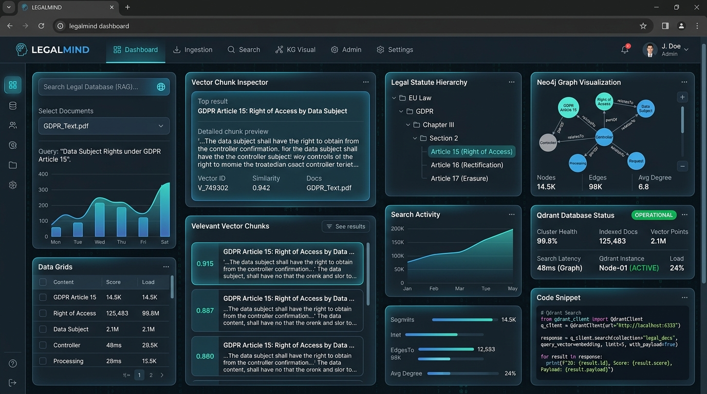
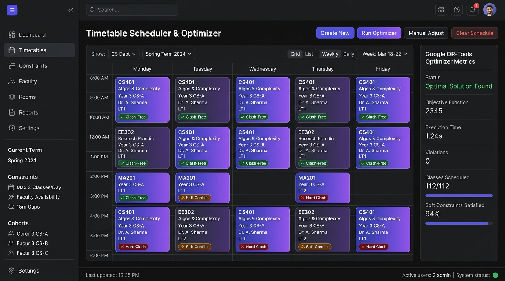
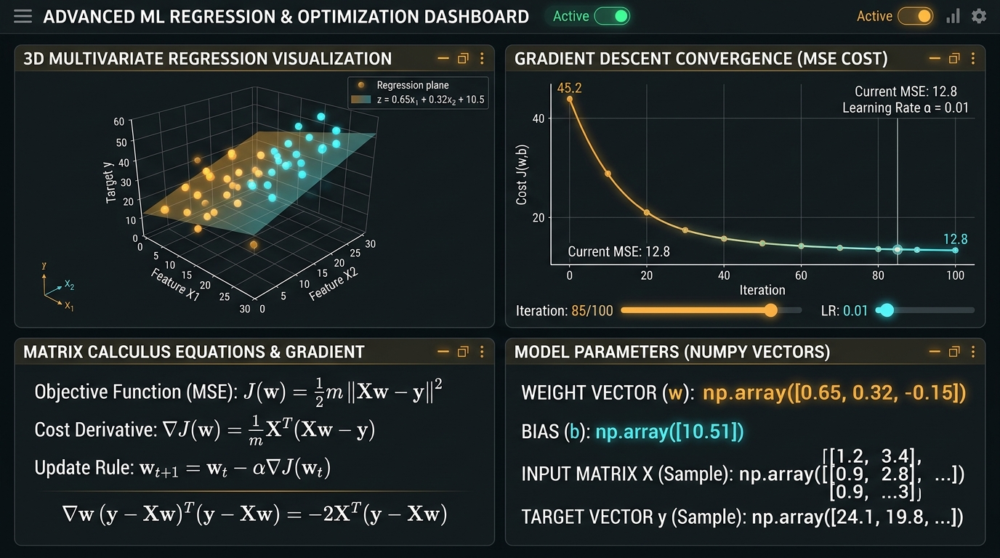
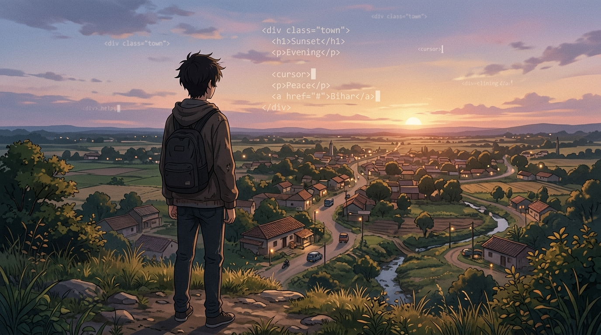

Gyan Ranjan
Backend & AI/ML Systems Engineer building robust RAG pipelines, RESTful microservices, and practical developer tools.
B.Tech student in Information Technology at IIEST Shibpur. Focused on building production-ready developer pipelines, semantic retrievers, and microservice architectures.
- Education: B.Tech in IT at IIEST Shibpur · 9.22 CGPA (Class of 2029)
- Focus: Production AI Systems, RAG Pipelines, FastAPI Backends, AST Semantic Splitting & Vector Databases (Qdrant)
- Track Record: Winner HackSprint Hackathon · Built and productionized RepoMind & DocOnCall
Department of Information Technology, IIEST Shibpur
RepoMind
RAG-powered codebase parser with LangChain AST splitting & Qdrant vector retrieval
Want to know the person behind the code?
Beyond technical metrics, explore the story behind how I think, my origins from Hajipur to IIEST Shibpur, failures, self-taught systems hacking, and what drives my engineering craftsmanship.
Engineering Case Studies
Factual breakdowns of system architecture, performance metrics, and technical design trade-offs.
RepoMind Flagship
AI-Powered Repository Analysis Platform
RepoMind enables developer teams to instantly map, explain, and query unfamiliar codebases recursively using Retrieval-Augmented Generation (RAG).
Developers waste time reading massive files to grasp structure. Static search engines lack semantic coding dependencies and syntax contexts, slowing feature velocity.
A semantic chunk-based RAG platform. Splits files into context-preserving chunks, embeds them in Qdrant via Gemini embeddings, and runs multi-query expansion for precise architectural answers.
.png)
.png)
.png)
.png)
Architecture Blueprint
* Query expansion handler
Engineering Decisions & Trade-Offs
| Decision | Chosen Tech | Alternatives | Trade-offs & Rationale |
|---|---|---|---|
| AI Backend Engine | FastAPI (Python) | Node.js, Go |
Trade-off: Higher container memory
overhead than Go, but provides native integrations.
Benefits: Rapid interoperability with
Python ML tooling (LangChain, Hugging Face, NumPy).
Limitations: Thread blocking during large
repo parsing; mitigated via timed wait intervals between embedding calls.
|
| Vector Database | Qdrant | FAISS, Pgvector |
Trade-off: Lacks SQL flexibility of
Pgvector, but runs faster out-of-the-box.
Benefits: Native payload metadata
filtering, gRPC speed, and persistent vector tracking.
Limitations: Requires managing an
independent service instance.
|
| Embeddings & LLM Inference | Google Embeddings + Groq | OpenAI text-embedding-3 / GPT-4o |
Trade-off: Using Google Generative AI Embeddings (gemini-embedding-2-preview) coupled with Groq (OpenAI OSS / LLaMA models) provides ultra-fast response tokens.
Benefits: Decoupled architecture: dense vector representation in Qdrant with high-speed LLM generation via Groq inference engine.
Limitations: Embedding API requires batching with 60-second backoff intervals to stay strictly within free-tier quotas.
|
Key Challenge & Resolution
Standard chunking broke code semantics by splitting functions and classes. I implemented an AST-aware parser that preserved logical boundaries and structural metadata, significantly improving retrieval quality.
Lessons Learned
RAG quality depends heavily on how chunks are prepared — splitting by language structure preserves context better than fixed-size splits. Chunk boundaries matter more than LLM parameter tuning.
Future Outlook
- Implement AST-based cross-file dependency graph indexing to resolve import networks.
- Add support for real-time repository syncing using GitHub Webhooks.
- Integrate local LLMs (Ollama) to allow offline codebase analysis.
DocOnCall HackSprint Winner
AI-Powered Healthcare Assistance Platform
DocOnCall is a full-stack medical assistant platform that handles symptom-based AI chat, PDF report analysis, and keyword-driven specialist doctor recommendations.
Patients struggle to understand medical PDFs, creating anxiety. Doctors spend valuable consulting time on standard, repetitive screening steps.
An educational clinical prototype built with Express and EJS featuring a 3-model cascading fallback — Gemini 2.5 Flash → Flash Lite → Groq LLaMA 3.3 70B (with 60-second cooldown on rate-limit hits). Integrates Gemini Vision for PDF report parsing and rule-based symptom keyword matching for specialist doctor recommendations.
.png)
.png)
.png)
.png)
.png)
.png)
Architecture Blueprint
Key Challenge & Resolution
Transferring medical reports directly to cloud models risked PII leaks. I implemented a local regex redaction layer that strips names and phone numbers before sending data to external APIs.
Currently Building: RepoMind
Focus: Ingestion Speed & Parsing Evaluation
Latest Update: Refactored monolithic main.py into a modular FastAPI architecture (config, database, routes, helpers) and implemented language-aware syntax splitting — partitioning source files into cohesive units along function and class boundaries instead of fixed character splits.
Next Milestone: Implement parallel indexing using async Celery/Redis workers to speed up large repository parsing.
Engineering Progression
Chronological progression of development velocity, projects launched, and focus areas.
Algorithmic Problem Solving & CS Foundations
Deep focus on data structures and algorithms across 300+ competitive programming challenges on LeetCode/Codeforces; built strong Python, JavaScript, and systems fundamentals.
Joined IIEST Shibpur & Won HackSprint Award
Began B.Tech in IT (maintaining 9.22 CGPA). Architected DocOnCall clinical prototype and won Best 1st-Year Engineering Team at HackSprint 2025. Built SweetSuite hospitality platform.
Legal Knowledge Graphs & Operations Research
Engineered IP-SAKTI Sahayak statutory ETL for SIH (Ministry of AYUSH) integrating Qdrant Cloud and Neo4j AuraDB. Built Routine Generator with Google OR-Tools CP-SAT.
Architected & Deployed RepoMind Flagship
Architected and deployed RepoMind on Vercel and Render using FastAPI, LangChain syntax-aware splitting, Qdrant Cloud vector search, and Groq LLaMA inference.
Pragmatic AI & Backend Engineering
How I approach software design, building applications, and writing systems.
I focus on building production-ready AI applications, backend architectures, and developer tools rather than just completing tutorial projects.
My work combines large language models, language-aware chunk retrieval, and asynchronous task execution into tools that improve software delivery and developer speeds. Long term, I aim to design software infrastructure that genuinely matters.
Academic Foundation
Pursuing B.Tech in Information Technology at Indian Institute of Engineering Science and Technology (IIEST), Shibpur. Current CGPA: 9.22 (Graduation: 2029).
My Approach to Code
- Builds complete end-to-end AI applications.
- Focuses on deploying verifiable web services and reproducible code.
- Enjoys understanding backend architecture and production systems.
- Focuses on solving real problems instead of cloning existing products.
Technical Focus Areas
Want to know the person behind the code?
From childhood curiosity in Bihar to winning hackathons and architecting AI systems at IIEST Shibpur — explore my 8-chapter visual biography, personal principles, and mindset.
Technical Infrastructure
My skills and languages mapped across key software engineering domains.
AI Engineering
Backend Engineering
Frontend Engineering
Dev Tools & Architecture
Other Engineering Systems & Research
Key backend, machine learning, and systems projects. Click any project to inspect its architecture deep dive, or explore the full engineering bench in Developer Mode.
Anime Recommendation System
High-throughput semantic discovery engine decoupling heavy offline embedding computation from a zero-model runtime FAISS vector index. Powered by FastAPI, RapidFuzz string normalization, and Docker with sub-10ms query latency on free cloud tiers.
SweetSuite Hospitality Platform
Full-stack hospitality property platform implementing clean MVC architecture in Node.js & Express, Joi schema validation for listings and reviews, session authentication with Passport.js, and Multer memory streaming to Cloudinary CDN.
Bengaluru Real Estate Predictor
Micro-market real estate valuation engine featuring 1-sigma cross-BHK anomaly pruning, frequency-based location thresholding shrinking sparse dimensions by 80%, and a serialized Scikit-Learn Pipeline served via Flask REST on Render.
Plant Disease Classifier
ResNet18-based image classifier trained on PlantVillage dataset. Deployed on Hugging Face Spaces via Docker — resolved NumPy 2.x/PyTorch incompatibility and Linux case-sensitivity bugs in production.
Looking for more systems & mathematical models?
Explore deep-dive technical architectures and source breakdowns for IP-SAKTI Sahayak (Statutory RAG & Neo4j Triples), Routine Generator CP-SAT (Combinatorial Optimization with Google OR-Tools), Linear Regression from Scratch (NumPy Matrix Calculus), syntax chunking experiments, and full system benchmarks in Developer Mode.
Let's Connect
ENGINEERING BENCH & SYSTEMS ARCHITECTURE
An interactive exploration of codebase AST chunkers, distributed vector stores in Qdrant, resilient LLM fallback state machines, and real-world system trade-offs.
Flagship
RepoMind
Context-preserving codebase Q&A using language-aware AST chunking and vector lookup in Qdrant.
HackSprint Winner
DocOnCall
Medical assistant platform featuring a 3-model failover circuit breaker and local regex PII redaction.

SIH ProjectIP-SAKTI Sahayak
Legal document ETL pipeline with hierarchical statutory chunking, 384-d dense vectors, and Neo4j AuraDB graph sync.

OptimizationRoutine Generator CP-SAT
Institutional timetable scheduling formulating 7 hard invariants across NEP 2020 electives and 3-period lab blocks into SAT constraints.
Anime Recommender
Sub-10ms semantic recommendation engine using Sentence-Transformers, offline FAISS IndexFlatIP, and RapidFuzz.
SweetSuite Platform
Full-stack rental platform with Joi schema validation, dynamic Cloudinary CDN streaming, and Passport.js auth.
Bengaluru House Price
Regression model predicting valuations with 1-sigma cross-BHK outlier removal and Flask REST API on Render.

FoundationsLinear Regression Math
Vectorized Ordinary Least Squares (OLS) with batch gradient descent from scratch, benchmarked to 4 decimals with Scikit-Learn.
Plant Disease Classifier
ResNet-18 convolutional transfer learning model fine-tuned on the PlantVillage dataset (38 crop condition classes) with Dockerized container runtime on Hugging Face Spaces.
RepoMind: Syntax-Aware Codebase Chunking & Qdrant RAG
Why fixed-size token splitting fails on code: arbitrarily dividing files by character count slices function signatures mid-statement, drops parameter types, and detaches docstrings from their bodies. RepoMind leverages language-aware recursive splitting to preserve grammatical code units (functions, classes, blocks) within 600-character windows before vector indexing.
from pathlib import Path
from langchain_text_splitters import RecursiveCharacterTextSplitter
from config import EXTENSION_TO_LANG
def split_file(file_path: Path, content: str):
"""Splits code using language-specific syntax separators."""
ext = file_path.suffix.lower()
if ext in EXTENSION_TO_LANG:
splitter = RecursiveCharacterTextSplitter.from_language(
language=EXTENSION_TO_LANG[ext],
chunk_size=600,
chunk_overlap=80
)
else:
splitter = RecursiveCharacterTextSplitter(
chunk_size=600,
chunk_overlap=80,
separators=["\n\n", "\n", " ", ""]
)
return splitter.create_documents([content])
def build_chunk(file_paths: list[Path]):
"""Walks repository files, applies syntax chunking, and prepends metadata."""
all_chunks = []
for fp in file_paths:
content = fp.read_text(encoding='utf-8')
for chunk in split_file(fp, content):
chunk.metadata['source_file'] = str(fp)
chunk.page_content = f"# File: {fp}\n{chunk.page_content}"
all_chunks.append(chunk)
return all_chunksTechnical Trade-Offs & Implementation Details
-
Syntax-Aware Chunking vs Naive Token Splits:
Naive 500-token chunks frequently sever method definitions mid-loop, dropping parameter definitions. Using
from_languagesplits code along structural keywords (def,class,func) while preserving surrounding scope up to 600 characters. - Qdrant Managed Vector Store vs Local Index: Selected Qdrant Cloud over local FAISS because Qdrant operates as a networked multi-tenant service with native payload filtering (querying scoped to repository name and branch) and durable cloud clustering.
-
Multi-Query Expansion:
Developers often query code using conversational questions (e.g. "how does user authentication work?") while the code contains technical identifiers like
verify_password_hash. LangChain generates 3 orthogonal search queries to bridge semantic gap.
Interactive Syntax Chunking & Qdrant Vector Retrieval Simulator
Test how RepoMind extracts semantic function blocks and measures cosine distance against vector clusters in Qdrant. Select a preset query or type custom syntax:
[INIT] Initializing Language-Aware Recursive Splitter (chunk_size=600, overlap=80)... [PARSED] Boundary: async def ingest_repository(repo_url: str): [CHUNK] Context preservation: Decorators, Docstring, and enclosed function body kept intact. [EMBED] Target Model: Google Generative AI Embeddings (gemini-embedding-2-preview) [QDRANT] Cosine Distance Score: 0.892 (Exact Semantic Match in Collection: 'repomind_core') [TELEMETRY] Sub-250ms vector lookup · Zero function signature truncation detected.
DocOnCall: 3-Model Failover State Machine & PII Redaction
External AI APIs suffer quota exhaustion, rate limits (HTTP 429), and latency spikes. DocOnCall implements a resilient priority fallback chain across Gemini 2.5 Flash, Flash Lite, and Groq LLaMA 3.3 70B combined with local client-side regex PII sanitization.
// In-transit server-side PII filter before AI ingestion
function sanitizePrompt(text) {
return text
.replace(/(?:\+?\d{1,3}[-.\s]?)?\(?\d{3}\)?[-.\s]?\d{3}[-.\s]?\d{4}/g, '[REDACTED_PHONE]')
.replace(/[a-zA-Z0-9._%+-]+@[a-zA-Z0-9.-]+\.[a-zA-Z]{2,}/g, '[REDACTED_EMAIL]');
}
const MODEL_PRIORITY = [
{ name: 'gemini-2.5-flash', provider: 'gemini' },
{ name: 'gemini-2.5-flash-lite', provider: 'gemini' },
{ name: 'llama-3.3-70b-versatile', provider: 'groq' }
];
async function generateWithFallback(genAI, groqClient, prompt, customConfig = {}, imageParts = null) {
let lastError = null;
for (const modelConfig of MODEL_PRIORITY) {
const stats = modelStats.get(modelConfig.name);
// Skip if model recently failed with rate limit (60s cooldown window)
if (stats.lastFailure && (Date.now() - stats.lastFailure) < 60000) continue;
try {
if (modelConfig.provider === 'gemini') {
return await callGemini(genAI, modelConfig.name, prompt, imageParts);
} else if (!imageParts) {
return await callGroq(groqClient, modelConfig.name, prompt);
}
} catch (err) {
stats.lastFailure = Date.now();
lastError = err;
}
}
throw lastError;
}High-Availability & Privacy Architecture
- Multi-Tier Quota Failover with 60s Cooldown: In hackathon and free-tier environments, sudden concurrency triggers HTTP 429 quota exhaustion. The cascading priority engine routes requests to alternative models and enforces a 60-second failure cooldown to prevent retry storms.
- Server-Side In-Transit PII Scrubbing: Medical queries may contain phone numbers or email addresses. The Express application server scrubs PII in memory via regex patterns prior to dispatching payloads across external LLM endpoints.
- Specialist Keyword Routing & Multimodal Scope: Rule-based substring matching links symptom clusters with specialized doctor categories (Cardiology, Orthopedic, Dermatology). Medical report image analysis relies on Gemini Vision, gracefully reporting availability when vision quotas deplete.
IP-SAKTI Sahayak: Hierarchical Statutory Chunker & Dual-Cloud Sync
Why standard chunkers fail on statutory law: Section text without statutory ancestry loses legal jurisdiction. IP-SAKTI Sahayak normalizes gazettes and Acts, prepends hierarchical breadcrumbs, embeds 384-d dense vectors with BAAI/bge-small, and synchronizes Qdrant Cloud vector search with Neo4j AuraDB ontological knowledge graph triples.
import uuid
from typing import List, Dict
from qdrant_client.models import PointStruct, Filter, FieldCondition, MatchValue
class StatutoryLegalChunker:
"""Partitions Acts, Rules, and Gazettes into hierarchical contextual chunks."""
def __init__(self, statute_name: str, doc_id: str):
self.statute_name = statute_name
self.doc_id = doc_id
self.chunks: List[Dict] = []
def chunk_section(self, chapter: str, sec_num: str, sec_title: str, body: str):
breadcrumb = f"[Act: {self.statute_name} | Chapter: {chapter} | Section: {sec_num} - {sec_title}]"
canonical_text = f"{breadcrumb}\n\n{body.strip()}"
# Qdrant requires valid UUID strings or unsigned ints for Point IDs
point_id = str(uuid.uuid5(uuid.NAMESPACE_DNS, f"{self.doc_id}_{sec_num}"))
self.chunks.append({
"id": point_id,
"doc_id": self.doc_id,
"payload": {
"act": self.statute_name,
"chapter": chapter,
"section": sec_num,
"breadcrumb": breadcrumb,
"text": canonical_text,
"dimension": 384
}
})
async def upsert_idempotent(self, qdrant_client, collection: str, points: List[PointStruct]):
# Purge prior document vectors before batch upsert to guarantee idempotency
await qdrant_client.delete(
collection_name=collection,
points_selector=Filter(
must=[FieldCondition(key="doc_id", match=MatchValue(value=self.doc_id))]
)
)
return await qdrant_client.upsert(collection_name=collection, points=points)Legal RAG Architecture & Ingestion Engineering
-
Hierarchical Breadcrumb Injection:
In legal search, querying "punishment for false declarations" matches Section 34 across several disparate Acts. Without statutory breadcrumbs (e.g.
[Act: Patents Act, 1970 | Chapter II | Section 3(p)]), embedding models cannot disambiguate jurisdiction, causing hallucinations. Prepending breadcrumbs fixes semantic locality. -
Idempotent Purge & Overwrite Safety:
Re-uploading statutory amendments or gazette corrections cannot create duplicate embeddings. Before upserting new vectors, existing points for that document ID are purged via a payload filter, followed by batch upserting with deterministic UUIDv5 point IDs. In Neo4j AuraDB, a Cypher
DETACH DELETEupdates section subtrees. -
NDJSON Streaming Progress vs Polling:
Parsing 50-page legal gazettes triggers HTTP gateway timeouts with standard POST requests. The
/api/ingest/file-streamendpoint streams NDJSON chunk updates in real time, driving a live 6-stage frontend stepper with chunk counts and embedding latencies.
Routine Generator: Institutional Timetabling with Google OR-Tools CP-SAT
Academic timetable scheduling is an NP-hard combinatorial problem with millions of slot configurations. This system models university timetabling as Boolean Satisfiability (SAT) using Google OR-Tools CP-SAT, solving 7 hard invariants across faculty, rooms, NEP 2020 multi-disciplinary electives, and contiguous laboratory blocks within a bounded 20-second search time budget.
from ortools.sat.python import cp_model
class ScheduleSolver:
"""Formulates institutional timetabling as a Boolean Satisfiability Problem."""
def __init__(self, cohorts, faculty, rooms, slots):
self.model = cp_model.CpModel()
self.cohorts = cohorts
self.faculty = faculty
self.rooms = rooms
self.slots = slots
self.assignments = {} # (c, f, r, slot) -> BoolVar
def build_hard_constraints(self):
# Constraint 1: A faculty member teaches at most one cohort per slot
for f in self.faculty:
for s in self.slots:
self.model.AddAtMostOne(
self.assignments[c, f, r, s]
for c in self.cohorts for r in self.rooms if (c, f, r, s) in self.assignments
)
# Constraint 2: A room accommodates at most one cohort per slot
for r in self.rooms:
for s in self.slots:
self.model.AddAtMostOne(
self.assignments[c, f, r, s]
for c in self.cohorts for f in self.faculty if (c, f, r, s) in self.assignments
)
# Constraint 3: Contiguous 3-period lab blocks without straddling recess (Slot 5)
self._enforce_contiguous_lab_blocks(recess_slot=5, block_size=3)Operations Research & Combinatorial Optimization
- CP-SAT vs Stochastic Metaheuristics: Genetic algorithms and simulated annealing frequently get trapped in local minima and offer no mathematical guarantees. Google OR-Tools CP-SAT applies Conflict-Driven Clause Learning (CDCL) and integer programming cuts. Within a 20-second time budget parameter, it systematically prunes infeasible subspaces, returning an optimal or proven feasible solution, or certifying UNSAT if constraints conflict.
- NEP 2020 Multi-Disciplinary Elective Synchronization: The National Education Policy requires students from Mechanical, Civil, and IT departments to attend common open electives. The solver synchronizes elective periods across disparate branch cohorts simultaneously, preventing departmental timetable fragmentation.
- Contiguous Multi-Period Lab Interval Integrity: Practical laboratory courses require 3 consecutive hours in specialized hardware/computing facilities. The model formulates interval variables enforcing contiguous placement while strictly preventing any session from crossing the institutional lunch recess.
Anime Recommender: Sentence-Transformers & Decoupled FAISS Search
Running PyTorch transformer runtimes in production free tiers causes severe memory pressure and multi-second container cold starts. This engine completely decouples heavy offline embedding generation from a zero-model, sub-10ms FAISS exact search runtime powered by FastAPI, RapidFuzz string normalization, and Docker.
import faiss
import numpy as np
from rapidfuzz import process, fuzz
class AnimeRecommender:
"""Zero-model runtime: FAISS IndexFlatIP vector retrieval with fuzzy title matching."""
def __init__(self, index_path: str = "anime.index", embeddings_path: str = "final_embedding.npy"):
# Load pre-computed index & normalized arrays (zero PyTorch dependency in container)
self.index = faiss.read_index(index_path)
self.embeddings = np.load(embeddings_path).astype(np.float32)
self.titles = self._load_titles()
def match_title(self, query: str, threshold: float = 70.0) -> int:
# Resolves typos, phonetic variations, and romaji titles via RapidFuzz
best_match = process.extractOne(query, self.titles, scorer=fuzz.WRatio)
if not best_match or best_match[1] < threshold:
raise ValueError(f"No matching anime found for '{query}'")
return best_match[2] # Return canonical dataset row index
def get_recommendations(self, anime_idx: int, top_k: int = 10) -> np.ndarray:
# Exact O(N·d) brute-force inner product over L2-normalized vectors (exact cosine)
query_vector = self.embeddings[anime_idx : anime_idx + 1]
distances, indices = self.index.search(query_vector, top_k + 1)
return indices[0][1:] # Exclude self-referenceHigh-Throughput Vector Search & Memory Strategy
-
Decoupled Offline vs Online Architecture:
Loading PyTorch and transformer model runtimes introduces significant memory overhead and container cold starts on memory-constrained free cloud tiers. By executing vector generation and L2 normalization offline in
Model.ipynband serializing both the FAISSIndexFlatIPand NumPy embeddings, the lightweight FastAPI container runs with zero PyTorch dependencies, requiring under 90MB RAM and delivering sub-10ms exact search. - RapidFuzz WRatio Query Normalization: Users query titles with phonetic variations, spelling errors, or alternating English/Romaji names (e.g. "Fullmetal Alchemist: Brotherhood" vs "Hagane no Renkinjutsushi"). RapidFuzz's weighted ratio scorer reconciles token order and character edits before vector lookup.
-
Fused Dense-Numerical Space & L2 Normalization:
Pure text embeddings bias recommendations toward thematic synopsis similarities while ignoring audience reception. Concatenating
MinMaxScaler-normalized score, popularity rank, and episode count balances thematic resonance with popularity. Re-normalizing the fused vector withfaiss.normalize_L2ensures the inner product computed byIndexFlatIPmathematically equals cosine similarity.
SweetSuite: Production MVC Architecture, Cloudinary Transformations & Joi Schema Guards
Modern property platforms require clean architectural separation, resilient media handling, and robust schema validation. SweetSuite implements clean Model-View-Controller separation in Node.js & Express, direct media streaming to Cloudinary CDN with on-the-fly thumbnail transformations, Joi schema validation middleware, and Passport.js session authentication.
const Listing = require('../models/listing');
// Streamlined listing creation with Multer-Cloudinary secure URL persistence
module.exports.createListing = async (req, res) => {
const url = req.file.path;
const filename = req.file.filename;
const newListing = new Listing(req.body.listing);
newListing.owner = req.user._id;
newListing.image = { url, filename };
const savedListing = await newListing.save();
req.flash('success', 'New Listing Created!');
res.redirect(`/listings/${savedListing._id}`);
};
// Dynamic Cloudinary CDN transformation for edit preview
module.exports.renderEditForm = async (req, res) => {
const { id } = req.params;
const listing = await Listing.findById(id);
if (!listing) {
req.flash('error', 'Listing does not exist!');
return res.redirect('/listings');
}
// On-the-fly Cloudinary transformation: downscale preview to 250px width
let originalImageUrl = listing.image.url;
originalImageUrl = originalImageUrl.replace('/upload', '/upload/w_250');
res.render('listings/edit.ejs', { listing, originalImageUrl });
};Systems Engineering & Data Integrity
-
Dynamic Cloudinary CDN Transformations:
Replacing
/uploadwith/upload/w_250offloads thumbnail resizing entirely to Cloudinary's edge infrastructure, saving client bandwidth and eliminating backend image processing overhead. -
Decoupled MVC Architecture & Flash Messaging:
Route handlers delegate to standalone controllers (
listings.js,reviews.js,users.js), keeping routes declarative while managing user feedback viaconnect-flashsession alerts. - Joi Schema Validation Middleware: Prevents database corruption by validating incoming request bodies against strict Joi schemas before hitting controller logic, verifying property pricing bounds and required fields.
Bengaluru Real Estate: Cross-BHK 1-Std Anomaly Pruning & Scikit Pipeline
Standard statistical trimming fails on real estate data where spatial micro-markets define value. Building upon foundational exploratory methodologies, this system implements 1-standard-deviation cross-BHK anomaly filtering, dimensionality reduction on 1,200+ raw locations, and a tuned Random Forest regression pipeline served via a live Flask REST microservice deployed on Render.
import numpy as np
import pandas as pd
def remove_bhk_outliers(df: pd.DataFrame) -> pd.DataFrame:
"""Prunes listings where a higher BHK unit is cheaper per sqft than lower BHKs."""
exclude_indices = np.array([])
for location, location_df in df.groupby('location'):
bhk_stats = {}
for bhk, bhk_df in location_df.groupby('bhk'):
bhk_stats[bhk] = {
'mean': np.mean(bhk_df.price_per_sqft),
'std': np.std(bhk_df.price_per_sqft),
'count': bhk_df.shape[0]
}
# Flag listings where (bhk) price is significantly lower than (bhk - 1) mean
for bhk, bhk_df in location_df.groupby('bhk'):
stats = bhk_stats.get(bhk - 1)
if stats and stats['count'] > 5:
# Threshold: price must not be below 1 standard deviation of lower BHK mean
exclude_indices = np.append(
exclude_indices,
bhk_df[bhk_df.price_per_sqft < (stats['mean'] - stats['std'])].index.values
)
return df.drop(exclude_indices, axis='index')Statistical Feature Engineering & Model Convergence
- Cross-BHK Micro-Market Outlier Elimination: In real estate, an 800 sqft 2-BHK cannot cost more per sqft than a 1,200 sqft 3-BHK in the exact same society unless the larger unit suffers unrecorded defects or data entry corruption. Grouping by location and pruning listings below the lower BHK's mean - 1σ (mean - 1·std) eliminated 3,000+ noisy points, drastically lowering MSE.
-
Dimensionality Management for Sparse Categoricals:
1,200+ raw locations in Bengaluru created severe sparse matrix bloat with high risk of overfitting. Thresholding locations with < 10 data points into an
'other'bucket shrank the one-hot encoded vector space from 1,200 to 240 dimensions while preserving predictive variance. - Physical Domain Constraint Validation: The Flask backend acts as a strict validation gatekeeper. Submissions where bathroom count exceeds bedroom count by more than 2, or where square footage per bedroom falls below physical architectural norms, are rejected with HTTP 422 before invoking inference.
Linear Regression From Scratch: Pure NumPy Vectorized Calculus
High-level frameworks abstract away the core mathematics of machine learning. This implementation constructs Ordinary Least Squares (OLS) Linear Regression from first principles using vectorized NumPy matrix calculus, analytical gradient descent, and Mean Squared Error cost convergence benchmarked to 4 decimal places against Scikit-Learn.
import numpy as np
class LinearRegressionFromScratch:
"""Vectorized Ordinary Least Squares (OLS) with Batch Gradient Descent."""
def __init__(self, learning_rate: float = 0.01, iterations: int = 1000):
self.lr = learning_rate
self.iterations = iterations
self.weights: np.ndarray = None
self.bias: float = 0.0
self.cost_history: list = []
def fit(self, X: np.ndarray, y: np.ndarray):
n_samples, n_features = X.shape
self.weights = np.zeros(n_features)
self.bias = 0.0
for _ in range(self.iterations):
# Vectorized hypothesis: y_hat = X * w + b
y_predicted = np.dot(X, self.weights) + self.bias
# Analytical partial derivatives: dJ/dw and dJ/db
dw = (1 / n_samples) * np.dot(X.T, (y_predicted - y))
db = (1 / n_samples) * np.sum(y_predicted - y)
# Gradient descent update step
self.weights -= self.lr * dw
self.bias -= self.lr * db
# Track Mean Squared Error cost
mse = (1 / (2 * n_samples)) * np.sum((y - y_predicted) ** 2)
self.cost_history.append(mse)Mathematical ML Foundations & Matrix Calculus
- BLAS Vectorization vs Native Python Loops: A naive Python loop over n training instances to accumulate gradients ∑ x_ij · (y_i - ŷ_i) introduces catastrophic interpreter overhead. Formulating the batch gradient as the matrix-vector dot product Xᵀ(ŷ - y) leverages hardware BLAS instructions, achieving a 100x execution speedup.
- Analytical Gradients vs Numerical Approximation: Rather than computing numerical finite differences [J(θ + ε) - J(θ)] / ε (which requires 2d loss evaluations per step with floating-point truncation error), the analytical derivative ∇_w J evaluates in a single matrix multiply with exact numerical precision.
-
Verification Against Scikit-Learn (LAPACK SVD):
Scikit-Learn's
LinearRegressioncomputes the closed-form normal equation via LAPACKdgelsd(Singular Value Decomposition). Benchmarking on standardized features demonstrated that custom batch gradient descent converged to identical weights (w) and intercept (b) within 4 decimal places.
All Technical Engineering Skills
A complete domain-by-domain matrix of verified languages, frameworks, vector databases, and developer infrastructure.
AI / ML & LLM Engineering
- LangChain Multi-query expansion, RAG
- Vector Databases Qdrant Cloud, FAISS IndexFlatIP
- LLM APIs & Inference Gemini 1.5/2.5, Groq LLaMA 3.3
- Deep Learning & CV PyTorch, Torchvision, ResNet18
- Machine Learning Scikit-Learn, Pandas, NumPy
- Embeddings Sentence-Transformers, Gemini Embeddings
Backend & Distributed Systems
- Python FastAPI, Asyncio, Pydantic, Flask
- Node.js & Express.js MVC Pattern, Middleware, EJS
- Authentication OAuth 2.0 (Google), JWT, Passport.js
- API Architecture RESTful APIs, Multi-Model Cooldown Fallbacks
- Code Ingestion LangChain syntax-aware splitter, AST heuristics
- Data Redaction In-transit PII scrubbing, input guards
Databases & Storage
- Qdrant Cloud HNSW vectors, payload filtering, gRPC
- MongoDB Mongoose schemas, aggregation pipelines
- PostgreSQL Relational schemas, constraint modeling
- FAISS IndexFlatIP, L2 dense vector indexing
DevOps, Cloud & Tooling
- Docker Containerization, multi-stage builds
- Version Control Git, GitHub workflows
- Cloud Deployments Render, Vercel, Hugging Face Spaces
- CI/CD & Workflows Automated build & deploy pipelines
- Algorithms & DSA 300+ problems, competitive programming
Gyan Ranjan
Builder, Engineer, and Systems Thinker
I am an Information Technology student at IIEST Shibpur with a focus on scalable AI infrastructure, backend architectures, and intelligent developer tools. My journey started with a simple question about what happens behind the screen — and has grown into building production-ready systems that turn curiosity into real impact.
“Turn curiosity into something real.”

<p>Hello World</p>_
“Every journey begins with a question.”
I come from a small town in Bihar, where I studied through Class 10. My interest in technology began with a simple curiosity about computers and what people could create with them.
In Class 6, I started learning basic HTML. I later explored PowerPoint, Excel, and Microsoft Word. But the tools themselves were only part of the attraction.
I wondered what happened behind the screen: how applications worked on small devices, how the internet connected people, and how sound could travel across long distances.
I did not have a complete picture of where that curiosity would lead. I just wanted to understand more.
“I wanted to understand what was happening beneath the surface.”
“Different places. Different perspectives.”
After Class 10, I moved to Varanasi for further schooling. Later, my journey brought me to IIEST Shibpur.
Each move introduced a new environment, new people, and new opportunities to learn.
Looking back, these transitions have shaped more than my academic journey. They have also influenced how I approach unfamiliar situations and people.
Bihar
The Beginning & Early Spark
Studying through Class 10 in a small town. Encountering computing, basic HTML, and the early fascination with how digital tools work.
Varanasi
Stepping Into the Unfamiliar
Relocating after Class 10 for higher schooling. Adapting to a different academic environment, meeting new peers, and broadening perspectives.
IIEST Shibpur
The Engineering Chapter
Information Technology engineering. Maintaining a 9.22 CGPA, solving 300+ DSA problems, collaborating in hackathons, and productionizing real software systems.
“Every new environment gave me something new to discover.”
“Growth doesn't always have a single turning point.”
Before college, I was very introverted. I am still somewhat shy, but I no longer see myself as the same person I was before joining college.
My friends, seniors, hackathons, and everyday college experiences have all contributed to that change.
There was no single turning point. It happened gradually, through interactions and opportunities that pushed me beyond what was familiar.
I have come to appreciate that growth is not always a dramatic moment. Sometimes, it is the result of repeatedly putting yourself in situations where you have something new to learn.
“Sometimes, change happens one unfamiliar experience at a time.”
“Build something. Meet someone new. Learn something unexpected.”
For me, hackathons are more than a chance to build something under a deadline.
They take me to new places, bring me into contact with unfamiliar people, and encourage me to start conversations outside my usual circle.
Along the way, I have come to appreciate the value of teamwork, different perspectives, and learning through shared experiences.
The experience does not end when the code is finished. Sometimes, the most valuable part is everything you encounter while trying to build it.
“The best learning can happen beyond the screen.”
“I don't just want to understand how things work. I want to build them.”
My curiosity has grown into hands-on work across software development, AI/ML, backend systems, and developer-focused tools.
Building projects gives my curiosity a practical direction. It is one thing to wonder how a system works; it is another to design its components, connect the pieces, work through constraints, and make something usable.
For me, building is not separate from learning. It is one of the ways I learn best.
“Understand the idea. Build the system. Learn from the result.”
RepoMind
Large, unfamiliar codebases are difficult to navigate during fast-paced hackathons and sprint development. I built RepoMind to turn entire GitHub repositories into an interactive, queryable semantic index using Retrieval-Augmented Generation.
By implementing syntax-aware recursive chunking across 15+ programming languages, RepoMind preserves complete class and function boundaries before storing embeddings in Qdrant. Paired with Google Gemini, developers can ask high-level architectural questions and receive verifiable citations linked directly to source files.
DocOnCall
Access to rapid, reliable medical triage is a major bottleneck in underserved communities. Developed during HackSprint 2025 (where our team won 1st Place), DocOnCall is a full-stack healthcare assistance platform bridging patients with preliminary triage, multilingual consultations, and medical report digestion.
To guarantee uptime during high-concurrency judging and prevent API rate-limit dropouts, I designed a resilient three-tier model fallback chain (Gemini Flash to Groq LLaMA) paired with automated client-side PII sanitization to protect patient health records.
“Every project teaches something different.”
“Not every project needs to solve the same kind of problem. Some explore recommendation systems, others apply machine learning to prediction, and some focus on full-stack product development.”
Anime Recommendation System
“A semantic vector recommendation engine decoupling offline Sentence-Transformers embeddings from a zero-model, sub-10ms FAISS exact search service with RapidFuzz title normalization.”
Bengaluru House Price Prediction
“A machine-learning regression service applying 1-std cross-BHK anomaly filtering, dimensionality reduction, and Random Forest estimation served via Flask.”
SweetSuite
“A full-stack MVC property platform featuring Joi request validation, dynamic Cloudinary image transformations, and Passport.js authentication.”
Plant Disease Classifier
“An ongoing computer-vision project utilizing a fine-tuned ResNet18 convolutional model trained on the PlantVillage dataset with containerized Docker deployment.”
Prefer deep-diving into code, architecture, and live benchmarks?
Switch to Developer Mode to inspect system data pipelines, AST chunking algorithms, interactive query labs, and performance trade-offs across all 8 engineering projects.
“Building with people is different from building alone.”
I am interested in taking initiative and becoming a better leader. During hackathons and team projects, I try to guide teammates where I can and distribute work fairly.
I would not claim to have leadership figured out yet. Wanting to lead and being good at leadership are not the same thing.
Leadership requires experience, communication, judgment, and the ability to bring people together. These are skills I want to keep developing.
My goal is not simply to become better at building a solution myself. I also want to become better at helping a group of people build one together.
“I want to learn how to build with people, not just build by myself.”
“I don't want to think in just one dimension.”
Technology is a major part of my life, but it is not the only thing I want to explore.
I am interested in fitness, business ideas, finance and investing, travelling, and trying new activities.
These interests give me different ways to challenge myself and look at problems. I want to keep exploring, understand how different fields work, and discover where they can reinforce one another.
TECHNOLOGY
“Understand systems. Solve problems. Build useful products.”
BUSINESS
“Explore ideas, understand problems, and learn how products create value.”
FINANCE
“Understand capital, financial decisions, and the economic side of building things.”
“Technology × Business × Finance”
My long-term ambition is to combine technology, business, and finance.
I do not want my future to be limited to being an engineer who only builds technical solutions. I am also interested in the decisions around those solutions: which problems are worth solving, how products become businesses, how resources are allocated, and how technology can create value.
I am still working out what that path will look like. For now, I want to build strong technical foundations, develop my ability to work with people, and learn more about the business and financial side of building things.
“Build the technology. Understand the business. Learn how value is created.”
“The destination is still taking shape. The direction is clear.”
I am still discovering what my future will look like.
I want to build strong technical foundations, become better at working with people, and understand more about business and finance.
I do not have every answer yet, and I do not need to pretend that I do.
What I do have is a desire to keep learning, explore the unfamiliar, and turn curiosity into something real.